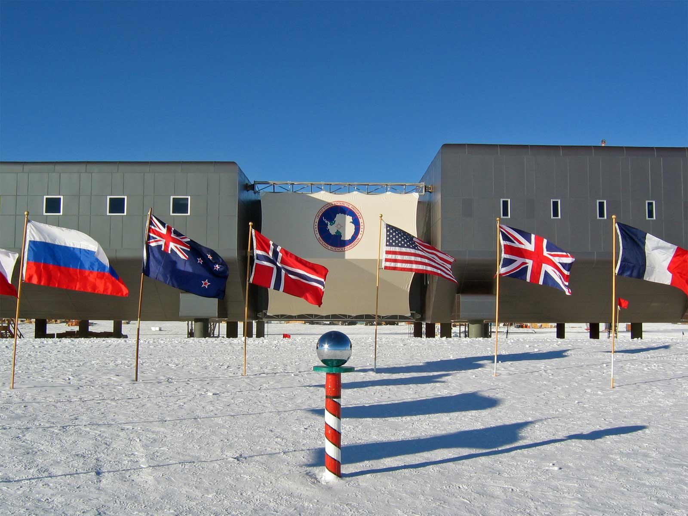
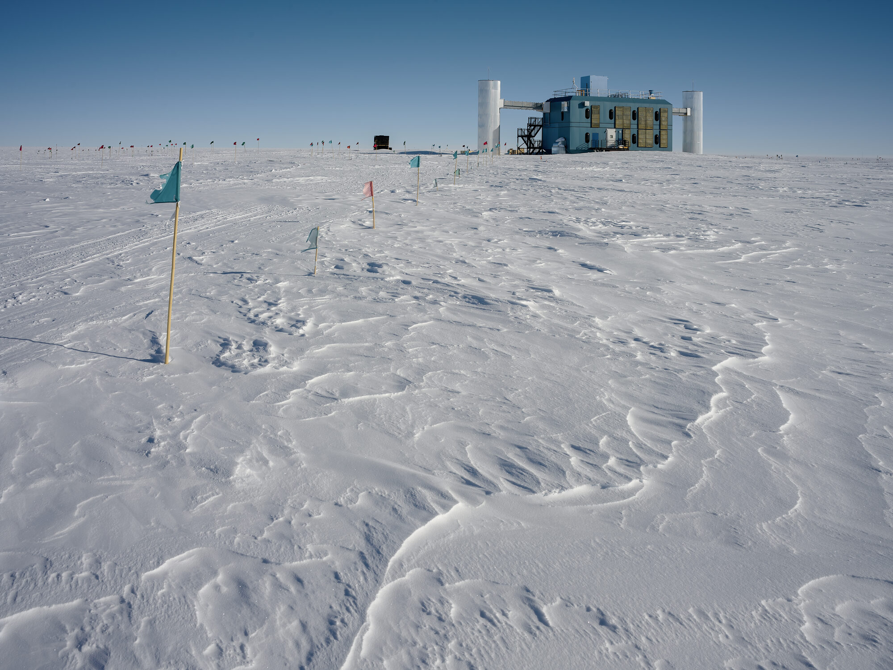

En 2016, tres figuras de alcance global —un Secretario de Estado en plenas elecciones presidenciales, el líder supremo de la Iglesia Ortodoxa Rusa, y el segundo hombre en pisar la Luna— viajaron a la Antártida en cuestión de semanas. Ninguna de esas visitas recibió una explicación pública completamente satisfactoria. Las que se dieron sonaron más a pretexto que a justificación.
Debajo de esa capa de hielo —algunos lugares de hasta cuatro kilómetros de profundidad— opera desde 2010 el detector de neutrinos más grande jamás construido. Un instrumento que la comunidad científica describe como un telescopio pasivo. Un ex-contratista de la empresa Raytheon que estuvo destacado allí ese mismo año tiene una descripción muy diferente.
Este artículo separa lo verificable de lo especulativo. Pero no descarta lo que no puede verificarse. A veces la ausencia de explicación es, en sí misma, información. Esta es la Parte I de la investigación: las visitas de 2016, IceCube y el testigo de Raytheon. La Parte II —civilizaciones ocultas, testimonios y los que no regresaron para contarlo— continúa en un artículo independiente.

Las Visitas de Alto Nivel — 2016
En el transcurso de pocos meses de 2016, el continente más remoto del planeta recibió una inusual concentración de visitantes con un denominador común: todas eran figuras de primer nivel mundial, y ninguna de sus visitas fue explicada de forma completamente coherente. La coincidencia temporal encendió alarmas entre investigadores independientes, analistas geopolíticos y una cantidad notable de personas con acceso privilegiado a información.
El máximo representante del cristianismo ortodoxo ruso viajó a bordo del buque naval Admiral Vladimirsky —que realizó una parada inusual en el puerto saudita de Yeda durante el trayecto— hasta la base rusa Bellingshausen. La razón oficial: bendecir la pequeña capilla ortodoxa Trinity Church, que lleva décadas en el continente.
Lo que resulta llamativo: cualquier obispo ortodoxo podía haber realizado esa bendición. No era necesario el líder espiritual de 150 millones de creyentes. La visita ocurrió apenas días después de su histórico encuentro con el Papa Francisco en Cuba —el primero entre las dos iglesias en casi mil años.
Kerry viajó a la Antártida el mismo día de las elecciones presidenciales estadounidenses de 2016 —la jornada en que la atención del mundo entero estaba en otro lugar. Se trató del rango diplomático más alto jamás enviado al continente hasta ese momento. La justificación oficial: interés personal en el cambio climático.
El problema con esa explicación lo señaló el analista Michael Rubin del American Enterprise Institute: los secretarios de Estado son diplomáticos. Van donde hay diplomáticos con quienes negociar. En la Antártida no hay ninguno. Además, cualquier dato sobre clima podía obtenerse con una llamada desde Washington. Al regresar, Kerry propuso una prohibición de 35 años al turismo privado en el continente.
Aldrin, de 86 años, viajó en una expedición turística al Polo Sur. Poco después fue evacuado de emergencia hacia Christchurch, Nueva Zelanda, por acumulación de líquido en los pulmones provocada por la altitud extrema —un cuadro médico real y bien documentado, del que se recuperó por completo.
Lo que no es real: la captura de pantalla de un supuesto tuit suyo que circuló poco después de la evacuación, con el texto "We are all in danger. It is evil itself" junto a la foto de una montaña antártica. Verificadores y la propia cronología de su cuenta confirmaron que se trató de un montaje burdo, nunca publicado por Aldrin. Lo que sí publicó antes de partir fue un tuit real y mucho más mundano: "We are ready to go to Antarctica! May be our last opportunity to tweet for a few days!" El bulo del tuit falso es, hoy, uno de los pilares más citados —y menos sustentados— de la mitología conspirativa sobre el continente.
Aunque de menor perfil institucional que los anteriores, Hanks también visitó la Antártida ese mismo año y pasó por la Trinity Church. La coincidencia temporal —él, Kerry y Kirill, todo en el mismo año— amplificó las especulaciones. La justificación: su fe ortodoxa.
Las visitas ocurrieron. Eso es verificable. Lo que no tiene respuesta satisfactoria es la concentración temporal y el rango de quienes fueron. Ninguna de las explicaciones públicas cubre la pregunta más simple: ¿por qué ese año, por qué esas personas, por qué en ese orden?
IceCube: El Instrumento Más Grande del Mundo
La versión oficial es esta: IceCube es el detector de neutrinos más grande jamás construido. Utiliza el hielo antártico —considerado el material más transparente disponible en la Tierra— como medio detector. Cuando un neutrino de alta energía procedente del cosmos colisiona con una molécula de hielo, genera una cascada de partículas que emiten luz azul débil (radiación de Cherenkov). Los sensores ópticos capturen esa luz y reconstruyen la trayectoria y energía del neutrino original.

El objetivo científico es estudiar fenómenos extremos del universo: supernovas, colisiones de agujeros negros, explosiones de rayos gamma y la naturaleza de la materia oscura. Desde su activación completa en diciembre de 2010, IceCube ha publicado docenas de estudios revisados por pares en Nature, Science y Physical Review Letters. En 2023 se convirtió en el primer instrumento en detectar neutrinos procedentes de nuestra propia galaxia.
Todo eso es real y documentado. Pero existe una segunda descripción del mismo instrumento, hecha bajo juramento ante el Congreso estadounidense.
Eric Hecker — El Testigo de Raytheon
En 2010, mientras IceCube completaba su instalación, un contratista llamado Eric Hecker llegó al Polo Sur bajo contrato de Raytheon Polar Services, el operador logístico principal del Programa Antártico de EE.UU. para la NSF (National Science Foundation). Su función era doble: bombero y plomero. Según afirmó en declaraciones públicas posteriores, ese perfil operacional le dio acceso total a las instalaciones.
Desde 2023, Hecker ha aparecido en múltiples plataformas —Shawn Ryan Show, Alex Jones Show, documentales independientes, y testimonios ante el Congreso de EE.UU. y el Senate Select Committee on Intelligence— con una descripción del IceCube que difiere radicalmente de la oficial. Sus declaraciones también circularon extensamente en redes sociales, incluyendo TikTok.
Hecker afirma que IceCube no es únicamente un instrumento de recepción pasiva de datos. Según él, el array de km³ está equipado con capacidades de transmisión activa, además de un sistema ELF (Extremely Low Frequency) paralelo embebido en el hielo, con millas de cable de antena. Describe el conjunto como una "plataforma de energía dirigida multifacética".
Su alegato más grave: afirma que cuando IceCube fue activado por primera vez en la transición de construcción a operaciones en 2010–2011, produjo descargas accidentales de energía que causaron los terremotos de Christchurch, Nueva Zelanda, en septiembre de 2010 y febrero de 2011. El primero mató a 185 personas. Hecker dice que al principio creyó que los sismos fueron accidentales, pero que en 2016, cuando WikiLeaks publicó correos electrónicos referenciando que el terremoto había sido "on cue", reconsideró.
IceCube tiene modo de transmisión activa, no solo recepción. El array de sensores ópticos puede emitir señales de energía dirigida en lugar de solo detectar neutrinos entrantes.
⚠ No verificado · No refutado públicamenteExiste un sistema ELF (Extremely Low Frequency) paralelo instalado en el hielo junto a IceCube, con kilómetros de cable de antena, sin documentación pública.
⚠ No verificado · Tecnología ELF sí existe en contextos militaresLa activación de IceCube en 2010–2011 causó accidentalmente los terremotos de Christchurch, Nueva Zelanda, al dirigir energía que perturbó placas tectónicas a miles de kilómetros.
✗ No hay evidencia que lo sustente · Sismología no lo apoyaEl array funciona también como sistema de comunicación con fenómenos no identificados o entidades extraterrestres, actuando como un transmisor de larga distancia capaz de proyectar señales al espacio.
✗ Especulativo · Sin sustento documentalLo que sí es verificable: Raytheon Polar Services fue contratista prime de la NSF para el Programa Antártico desde 2000 hasta 2011, con contratos documentados y renovaciones anuales públicas. La company efectivamente empleaba entre 350 y 1.400 personas en esa función. Hecker también declaró haber presentado testimonio ante el AARO (All-Domain Anomaly Resolution Office), el organismo del Pentágono creado para investigar UAPs. Que esas declaraciones existieron es consistente con lo que el propio Congreso ha confirmado sobre testigos que se presentaron ante ese organismo.
Lo que no es verificable: ninguna institución ha confirmado ni refutado públicamente las afirmaciones técnicas sobre el modo de transmisión de IceCube. La Universidad de Wisconsin, operadora del detector, no ha emitido ningún comunicado respondiendo específicamente a las alegaciones de Hecker.
Lo Real, Lo Desclasificado y Lo Que Nadie Explica
🚢 Operation Highjump — La mayor expedición antártica de la historia
1946–1947. La Marina estadounidense desplegó 4.700 hombres, 13 barcos y 33 aeronaves bajo el mando del Almirante Richard E. Byrd. La misión oficial: cartografía y selección de bases. La misión clasificada —según registros desclasificados posteriormente— incluía establecer reclamaciones territoriales y demostrar capacidad estratégica en los primeros días de la Guerra Fría. La operación terminó abruptamente en apenas tres meses, muy por debajo del tiempo planificado. Participantes describieron confusión sobre sus roles específicos. Al regresar, Byrd dio una entrevista donde habló de amenazas que podían llegar desde los polos. La frase fue leída en contexto de la Guerra Fría. Otros la leyeron de otra manera.
☢️ Operation Argus — Tres bombas nucleares cerca de la Antártida
1958. EE.UU. detonó tres armas nucleares en la región del Atlántico Sur, cerca del continente, como parte de experimentos para estudiar el efecto de explosiones nucleares en los cinturones de radiación de Van Allen. Clasificado Top Secret. Desclasificado en 1982. Completamente en dominio público.
🇩🇪 Neuschwabenland — La Expedición Nazi (1938–1939)
Alemania envió el buque MS Schwabenland a la Antártida, con dos hidroaviones que tomaron 16.000 fotografías aéreas y reclamaron el territorio como "Nueva Suabia". El objetivo era proteger su industria ballenera de la competencia noruega. La expedición duró un mes. No hay evidencia física de ninguna base subterránea. Colin Summerhayes del Scott Polar Research Institute refutó en publicaciones revisadas por pares la existencia de instalaciones nazis de cualquier envergadura. Lo que sí queda en pie: fue una operación deliberadamente secreta, con objetivos estratégicos reales, realizada por una potencia que en ese momento construía la mayor maquinaria de guerra moderna.
🏔️ El Lago Vostok — Lo que encontraron bajo cuatro kilómetros de hielo
El lago subglacial Vostok, del tamaño del Lago Ontario, fue perforado finalmente por científicos rusos en 2012 tras décadas de trabajo. Los primeros resultados de las muestras de agua fueron clasificados durante meses antes de publicarse. Cuando se publicaron, los hallazgos fueron descritos como "modestos". Se encontraron formas de vida en un ambiente aislado durante millones de años. El equipo ruso estuvo incomunicado durante casi una semana durante la perforación, lo que generó alarma global. La explicación fue un fallo técnico en la radio. Los científicos dijeron que no había nada siniestro. El lago sigue siendo objeto de investigación activa y la mayoría de sus datos permanecen sin publicar.
📡 Zonas borradas en Google Earth
Ciertas áreas del continente antártico aparecen pixeladas o de baja resolución en servicios de cartografía satelital. Algunas no corresponden a ninguna base científica conocida o instalación declarada públicamente en los registros del Tratado Antártico. No existe una explicación pública para todas estas anomalías.
| Tema | Estado | Verificabilidad |
|---|---|---|
| Expedición Nazi 1939 (reconocimiento, 1 mes) | ✅ Real | Documentado públicamente |
| Base subterránea nazi de gran escala | ✗ Mito | Refutado científicamente |
| Operation Highjump (clasificada) | ✅ Real | Desclasificada |
| Batalla de Highjump contra OVNIs | ✗ Mito | Sin evidencia |
| Bombas nucleares Operation Argus (1958) | ✅ Real | Desclasificado 1982 |
| Visitas VIP sin explicación (2016) | ✅ Ocurrieron | Sin justificación oficial suficiente |
| IceCube como arma tectónica (Hecker) | ⚠ No verificado | Declarado bajo juramento · No refutado |
| Lago Vostok y formas de vida aisladas | ✅ Real | Publicado · Investigación activa |
| Zonas borradas en mapas satelitales | ✅ Existen | Sin explicación pública |
| Calor geotérmico anómalo bajo el hielo | ✅ Documentado | Geología real · En investigación |
EL FONDO DEL AGUJERO
Civilizaciones ocultas · Testimonios no verificados · Los que no regresaron para contarlo
Leer la Parte II →